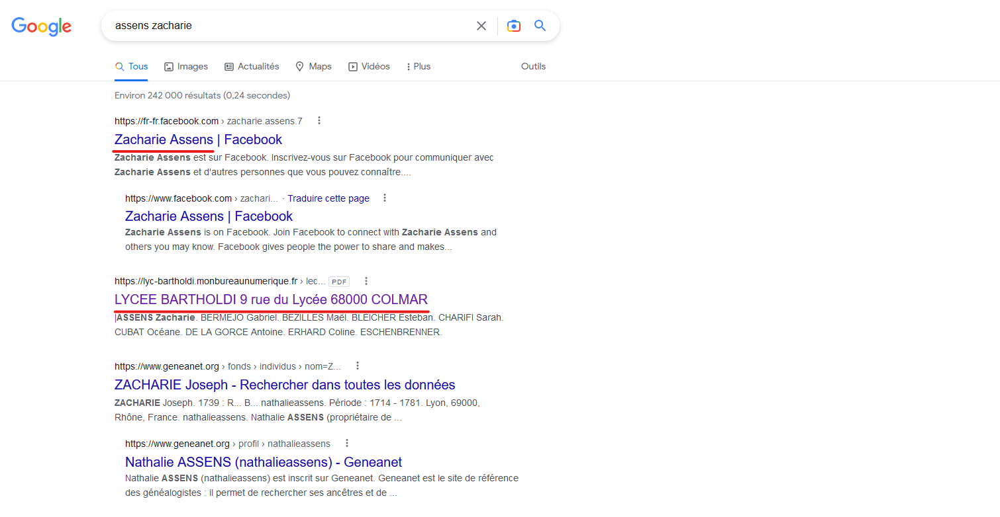
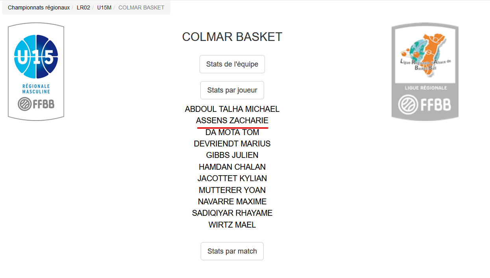

I posses a few traces on the internet. Without putting my social networks in count (Instagram mostly), searching "assens zacharie" on a browser should give three interesting answers.
The screenshot above shows two of them. The first clickable link isn't necessarily relevant. It's an old facebook account that I created about 10 years ago. However, it is easily possible to know who I am by finding my friends and family trough this account.
The third clickable link are data from my highschool, in Colmar. It apparently shows my class in 10th grade. We can find the first and last names of my french teacher, and all my classmates. This link also shows the city and highschool I was in during the year of 2019. By combining the first two links, it's not so hard to locate me and my family. 
The last clickable link can be found a little bit further in the results page. We can find data from the website Colmar basket. We can find my team of 15 year olds, and my stats. It isn't critical information about me, only that I was terrible in basketball at 15.